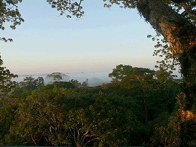

La Iniciativa Yasuní-ITT dejaría para siempre bajo tierras los 847 millones de barriles de petróleo en los campos ITT en el Parque Nacional Yasuní, en la cuenca alta del río Napo, tributario del Amazonas. El petróleo representa el 20 por ciento de las reservas ecuatorianas.
La Iniciativa Yasuní-ITT dejaría para siempre bajo tierras los 847 millones de barriles de petróleo en los campos ITT en el Parque Nacional Yasuní, en la cuenca alta del río Napo, tributario del Amazonas. El petróleo representa el 20 por ciento de las reservas ecuatorianas. La Iniciativa tendrá una serie de consecuencias importantes. La más palpable es que, al mantener este petróleo bajo tierra para siempre, se evita la emisión de 410 millones de toneladas métricas de dióxido de carbono, uno de los gases invernaderos que contribuye más al cambio climático. Luego, los países desarrollados, los más responsables por la situación crítica del planeta, asumirían el pago de una parte de los ingresos renunciados por el país al no explotar estos campos. Esto implica, además, un cambio en la relación entre países desarrollados y los subdesarrollados y, según el economista Alberto Acosta, “abre la puerta para el reclamo de la deuda ecológica” que tienen los países ricos con los pobres. Asimismo, la Iniciativa protege la extraordinaria biodiversidad del Yasuní (ver recuadro) y garantiza los derechos de los pueblos en aislamiento voluntario, los Tagaeri y los Taromenani. Finalmente, representa un primer paso hacia una economía post-petrolera, con el fin de nuestra dependencia en la energía fósil.
 La Iniciativa establece un fideicomiso que administra el Programa de las Naciones Unidas para el Desarrollo (PNUD) desde el 3 de agosto. A este fideicomiso, países, organizaciones y personas pueden contribuir a los 3 600 millones de dólares que solicita el Ecuador. Esta es tan solo la mitad de los recursos que recibiría el país al explotar el petróleo. O sea, la parte que contribuiría la mitad a esta iniciativa es el pueblo ecuatoriano a fin de beneficiar a todo el planeta.
La Iniciativa establece un fideicomiso que administra el Programa de las Naciones Unidas para el Desarrollo (PNUD) desde el 3 de agosto. A este fideicomiso, países, organizaciones y personas pueden contribuir a los 3 600 millones de dólares que solicita el Ecuador. Esta es tan solo la mitad de los recursos que recibiría el país al explotar el petróleo. O sea, la parte que contribuiría la mitad a esta iniciativa es el pueblo ecuatoriano a fin de beneficiar a todo el planeta.El proyecto fue ideado en los 1990 por organizaciones ambientalistas. Luego, el presidente Rafael Correa lo presentó a la Asamblea General de la Organización de Naciones Unidas en septiembre de 2007. Pero desde ese momento el Gobierno ha evidenciado su recelo en cuanto a la implementación de la Iniciativa.
Las promesas
 España es uno de los últimos países que ha prometido analizar “el mecanismo para contribuir” con un millón de dólares. Esta es “una de las pocas [promesas] recibidas por Ecuador para mantener intocado el petróleo” del Yasuní, según el analista Gonzalo Ortiz. La ministra española de Asuntos Exteriores y Cooperación, Trinidad Jiménez, presentó la oferta el 10 de noviembre, durante su visita al Ecuador.
España es uno de los últimos países que ha prometido analizar “el mecanismo para contribuir” con un millón de dólares. Esta es “una de las pocas [promesas] recibidas por Ecuador para mantener intocado el petróleo” del Yasuní, según el analista Gonzalo Ortiz. La ministra española de Asuntos Exteriores y Cooperación, Trinidad Jiménez, presentó la oferta el 10 de noviembre, durante su visita al Ecuador.El único país que ha entregado dinero hasta el momento es Chile, con el depósito de 100 mil dólares de un millón ofrecido. Y en la cuenta abierta por el Gobierno hay apenas 12 mil dólares en donaciones particulares.
María Fernanda Espinoza, ministra de Coordinación del Patrimonio, afirma que Portugal, Italia y Canadá han ofrecido contribuir. Asimismo, el ministro de Recursos Naturales No Renovables Wilson Pastor, asegura “un clima favorable” por parte de la Organización de Países Exportadores de Petróleo (OPEP). Pero, según el analista Ortiz, “ninguna de esas promesas se ha concretado”.
Peor, algunos países que se comprometieron han retirado su oferta. El golpe más duro en este sentido es la decisión del ministro alemán de Cooperación para el Desarrollo Dirk Niebel. Anunció el retiro de la oferta de contribuir 60 millones de dólares anuales durante 13 años, esto es, 780 millones en total. Alberto Acosta calificó la medida como “una suerte de puñalada por la espalda para la Iniciativa Yasuní-ITT”. El parlamento alemán se pronunció a favor de la iniciativa en 2008. Niebel quiere que se elimine toda ayuda al desarrollo de los países del Sur. Justifica su decisión en cuanto a la Iniciativa al afirmar que no se puede confiar que el Gobierno ecuatoriano utilizara los recursos en proyectos ecológicos y la promoción de las comunidades más pobres.
IESS: una inversión rara
Otro retroceso en la campaña para mantener el petróleo del Yasuní bajo tierra es una decisión inexplicable por parte del Instituto Ecuatoriano de Seguro Social (IESS). La entidad pretende invertir los fondos de los contribuyentes en la explotación del petróleo del Bloque 31. Este bloque se ubica en el “corazón mismo del Parque Nacional Yasuní”, según la carta que circula en contra de la medida, dirigida al presidente del IESS, Ramiro González. Además, el Bloque 31 contiene poco petróleo y mucha agua de formación que es muy contaminante. Su extracción no sólo generaría grandes riesgos para la naturaleza, sino es un territorio de tránsito de los pueblos tagaeri y taromenane, en aislamiento voluntario. Finalmente, la explotación de este Bloque se llevaría a pérdidas económicas. La única explicación para una propuesta tan descabellada es que, mediante la explotación del Bloque 31, se espera presionar la abertura de los campos ITT.
La carta mencionada ha sido lanzada por la organización Amazonía por la Vida. La misiva le recuerda al presidente del IESS que el artículo 407 de la Constitución prohíbe la extracción de recursos naturales no renovables en áreas protegidas a menos que exista una “petición fundamentada de la Presidencia de la República y previa declaratoria de interés nacional por parte de la Asamblea Nacional…”. Los miembros de Amazonía por la Vida piden a los contribuyentes al IESS que bajen la carta de la Internet (http://www. DORIAN/JENNY: FAVOR BUSQUE DIRECCION) y se sumen a la campaña para evitar la explotación del Bloque 31.
Pero el revés más reciente se debe a las palabras del presidente Correa en la Cumbre sobre el Cambio Climático celebrado en diciembre en México (ver página ). En dicho evento, el Jefe de Estado ecuatoriano amenazó a los países industrializados con explotar el petróleo si no concretan sus aportes al fideicomiso. El ex alcalde de Quito y promotor de la Iniciativa, Roque Sevilla, duda de la eficacia de esta estrategia por varias razones: “Primero, el anuncio repetitivo de una amenaza genera en las contrapartes una sensación de estar sometidos a una extorsión”, escribe en un comentario en El Comercio. Lo que es más, “el tener resultados magros por falta de capacidad negociadora y anunciar que si las cosas siguen mal el Gobierno se vería obligado a explotar el petróleo, produce, en los países que están dispuestos a apoyar la idea ecuatoriana, un compás de espera. Cada potencial aportante aguarda ver el comportamiento de otro para comprometerse. Como todos esperan y ninguno aporta, la negociación cae en terreno muerto, que es la etapa previa a la no negociación y al posible fracaso de la propuesta”.
La conclusión del comentarista: “Luego de Cancún la gran duda que nos asalta es si estos son errores de negociación del Gobierno o son parte de una estrategia que busca deliberadamente el fracaso de la Iniciativa”.
Fuentes: “Iniciativa Yasuní con muchas promesas y poco dinero”, Gonzalo Ortiz, 11 de noviembre de 2010, IPS (http://www.ipsnoticias.net/nota/asp?idnews=96862); carta de la campaña en rechazo a la explotación del Bloque 31 en el Parque Nacional Yasuní, patrocinada por Amazonía por la Vida; “La iniciativa Yasuní-iTT. Una oportunidad para repensar el mundo”, tomado del presentación PowerPoint que acompañó la ponencia pronunciada por Alberto Acosta en Berlín, 1 de noviembre de 2010; Amazonía por la Vida, Carta al presidente del IESS Ramiro González; “Estrategia para la negociación”, Roque Sevilla, El Comercio, 27 de diciembre de 2010.
{niftybox background=#F0F0EE,textcolor=green,font=, width=, height=,clear=}